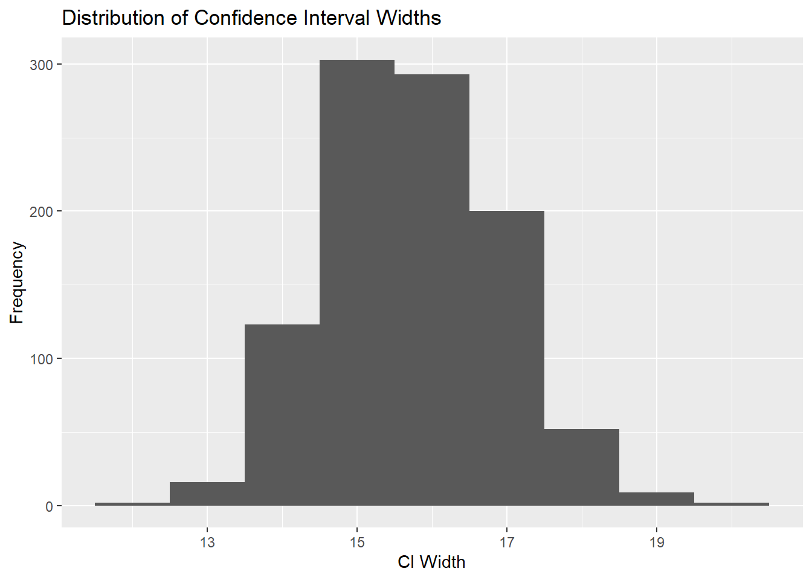

I created two groups. Group 1: mean=60, standard deviation=15, sample size=50. Group 2: mean=40, standard deviation=25, sample size=70. I set the numsims=1000 to simulated the for loop for 1000 times to get the estimated coverage rate. The central rectangle in each group’s boxplot represents the interquartile range, which contains the middle 50% of the data points. For example, in group 1, the IQR is from 55 to 75. The IQR of group 2 is from 30 to around 78. The line inside each box represents the median of each group. The median of group1 is 60, and the median for group2 is 40. The estimated coverage rate is around 0.967. Which means that when I repeating the sample simulation for 1000 times, approximately 96.7% of those intervals captured the true difference, which is slightly higher than the expected 95%. It means that the confidence intervals are slightly more conservative, meaning that they are perhaps wider than necessary to achieve a 95% converge rate.
Adapt the simulation to examine confidence interval width rather than confidence interval coverage.
print(paste("Standard Deviation of CI Width:", sd_width))
[1] "Standard Deviation of CI Width: 1.11724719220658"
library(ggplot2)ggplot(data.frame(ci_widths), aes(x = ci_widths)) +geom_histogram(binwidth =1) +labs(title ="Distribution of Confidence Interval Widths", x ="CI Width", y ="Frequency")

This is a histogram showing the distribution of confidence interval widths. The distribution of the CI widths seems to be unimodal, which is only one peak. The peak suggests that the CI widths is around 15 to 16, indicating that the most common interval width in the simulation. The widths of the confidence intervals seems to range from 13 to over 19.